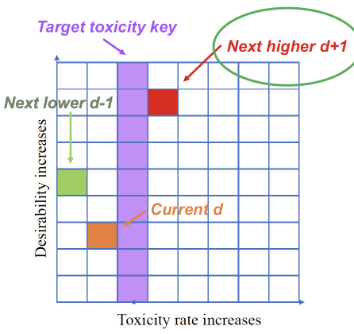

|
Richard (Yichen) Yan Email / LinkedIn / Google Scholar / Github
I'm currently a fourth-year PhD candidate in Statistics at Simon Fraser University, BC, Canada, under the supervision of Dr. Haolun Shi. |

|
Research and Projects
My research interests are clinical trial designs, causal inference, real world evidence and applied statistics. |
|  |
A Generalized Phase I/II Dose Optimization Trial Design With Multi‐Categorical and Multi‐Graded Outcomes
Richard Yan, Ruitao Lin, Tianyu Guan, Haolun Shi, Xiaolei Lin Statistics in Medicine 44 (7), e70049, 2025 Code A phase I/II design that jointly considers multi-categorical toxicity and efficacy with multi-graded outcomes, allowing flexible dose–response relationships. |

|
Target Aggregate Data Adjustment Method for Transportability Analysis Utilizing Summary‐Level Data From the Target Population
Richard Yan, Quang Vuong, Rebecca K. Metcalfe, Tianyu Guan, Haolun Shi, Jay JH Park Pharmaceutical Statistics 24 (5), e70029, 2025 Code Target Aggregate Data Adjustment (TADA) is a two-stage weighting framework for transportability analysis of survival outcomes. It simultaneously adjusts for censoring and distributional differences of effect modifiers using only aggregate-level data. |
|
Introducing TransportHealth and DAGDraw: User-Friendly Open-Source Software for Transportability and Generalizability Analyses and Causal Reasoning
Jay JH Park, Quang Vuong, Richard Yan, Steve Kittredge, Rebecca K Metcalfe VeriXiv 2, 67, 2025 Tutorial Vignettes / R Shiny App / R Package and Code TransportHealth (R package and Shiny app) and DAGDraw (Shiny app) are open-source tools designed to facilitate transportability and generalizability analyses in global health. They support diverse data scenarios and provide user-friendly workflows for causal inference and visualization. |
|

|
Comparing machine learning algorithms in predicting thermal sensation using ASHRAE Comfort Database II
Maohui Luo, Jiaqing Xie, Richard Yan, Zhihao Ke, Peiran Yu, Zi Wang, Jingsi Zhang Energy and Buildings 210, 109776, 2020 Machine learning methods have been applied to predict building occupants’ thermal comfort, with comparative analyses across algorithms and data processing strategies. Using the ASHRAE Comfort Database II, key predictors such as temperature, humidity, and clothing are identified. |
Miscellanea |
Invited Presentations |
ASA Biopharmaceutical Section Regulatory-Industry Statistics Workshop, Rockville, MD, Sep 2025
The Royal Statistical Society (RSS) International Conference, Edinburgh, UK, Sep 2025 The International Conference on Statistics and Data Science, Vancouver, BC, June 2025 The WNAR/IMS Annual Meeting, Whistler, BC, June 2025 Canadian Bayesian Adaptive Trials Network Meeting, Virtual, June 2024 Canadian Statistical Sciences Institute Showcase Lightning Talks, Virtual, Nov 2023 |
Teaching Contributions |
STAT 260: Introductory R for Data Science (SFU)
STAT 300: Statistics Communication (SFU) STAT 302: Analysis of Experimental and Observational Data (SFU) STAT 305: Introduction to Biostatistical Methods for Health Sciences (SFU) STAT 255: Statistics for Life Sciences I (UVic) STAT 123: Data Sciences (UVic) |
Volunteer Activities |
Orgnization Volunteer and Campus Tour Guide, SFU Department of Statistics Florence Nightingale Day Event, 2024 & 2025 |
|
Thanks for the page template adapted from Jon Barron. |